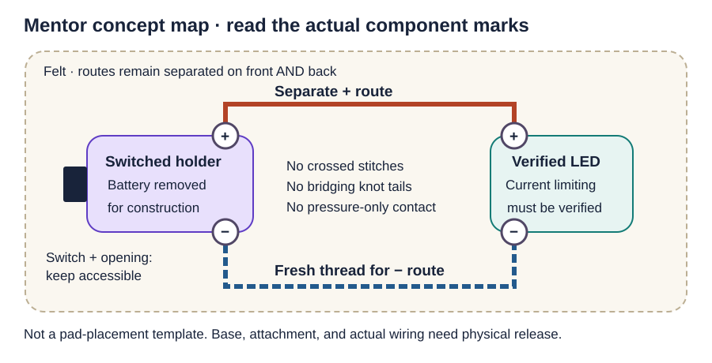
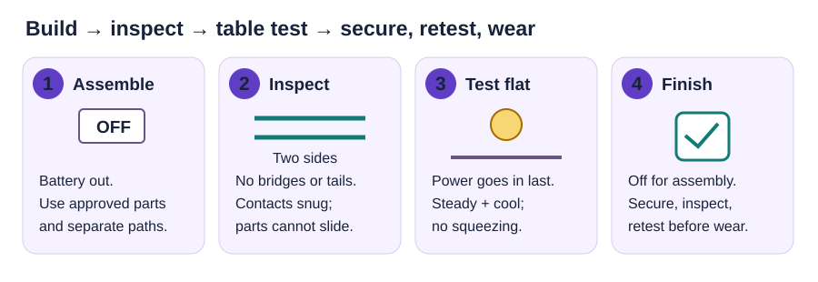

Tuesday, October 13, 2026 · District Kickoff · Griffiths
Glow Up Your Badge · mentor guide
Prepare a reliable light-up badge, rehearse the teaching moves, and run a theme-neutral, 20-minute district station. Students personalize, assemble the released design, test, and explain their circuit.
20 minutesincluding cleanup10–12 minutesstudent build target1 working badgeper participantTheme-neutralall district schools
Mentor preparation · physical prototype pending
The current candidate is one sewable LED and a switched CR2032 holder on felt. The exact delivered electronics, badge base, attachment, and student connection steps still need to pass the physical tests below. This page is a mentor build-and-rehearsal guide; its diagrams are not a released student placement card.
First action: Tri verifies the actual LED’s rated supply and current limiting, then builds the candidate with Jennifer and Stephanie. Record the design, time fresh builds, and freeze one version before buying district quantities, bagging production kits, or mass-printing student directions.
What students should leave with
A steady light that works without squeezing a connection.
A secure, comfortable badge with an accessible switch and safely retained power source.
An explanation: “The battery supplies energy. A complete path through the LED lets it light.”
What mentors must have ready
A tested standard badge, a personalized example, and an open teaching sample that shows the path.
One untouched master kit plus matching, known-good complete spares.
Real step photos, a two-minute demonstration, and a practiced 30–45 second check-and-swap routine.
Use the complete workshop playbook for the extended background and the student activity after the final kit is released. This direct LED candidate needs no program or starter code.
Sort now · build one before multiplying
Separate prototype supplies from event kits.
Bin
Put in it
Check before use
1 · Mentor prototype
One delivered Leyal LilyPad-style sewable LED; one switched LilyPad-style CR2032 holder; one inspected CR2032; white felt; conductive thread; tested large-eye needle, threader, and snips.
Identify the actual LED and holder, +/− marks, voltage, and required current limiting. A LilyPad-style appearance does not establish compatibility.
2 · Base & attachment trials
Candidate badge base/insert, clip or lanyard attachment, ordinary nonconductive thread, and proposed retention/decoration materials.
Test fit, service access, comfort, and strength. Select one final attachment. Ordinary glue or tape holds parts; it does not replace a conductive connection.
3 · Mentor bench
Parts tray, good light, timer, phone/camera, labels, prototype record, needle-count tray, and optional adult-operated meter.
Keep loose coin cells and sharp tools controlled. Remove the battery before sewing or changing a connection.
4 · Student kits · after release
One complete badge base/insert/attachment set and one matching, tested light-and-power assembly per participant; only the connection materials left to the student by the approved process.
Label kit version. Precut, premark, and complete the tested mentor preassembly. If mentors pre-sew the whole circuit, student bags do not need needles or loose conductive thread.
5 · Shared station supplies
Fast markers/stickers, shallow work trays, sleeved photo cards, timer, scrap container, labeled READY and INSPECT bins, symptom labels, and reset checklist.
Decorations stay out of the light, switch, battery opening, and connection zones. Keep repair work separate from the student build area.
6 · Known-good spares
Matching batteries, LEDs, approved connection materials, and complete inserts/kits that have passed the same checks as the master.
Start with 10–15% spare consumable electronics; use novice trial failures to decide how many complete replacements to stage. Keep the demonstration/master kit separate.
Count from the district roster. Let N be the confirmed total number of participants across rotations: prepare N released kits and round 10–15% of N up for each spare consumable. Let S be the tested simultaneous seat capacity: stage S trays and S photo cards, then replenish between groups. These are planning formulas, not an approved order quantity; the district headcount and final bill of materials remain open.
Keep October 13 stock separate from the Stauffer Wearables/Robotics project bins. Using those parts requires a named approval and replacement plan. See the supply guide. The LED-strip shopping image is a concept only; WS2812B strips are addressable electronics and cannot replace this simple LED without a different, verified design.
Mentor-only candidate · assemble before students arrive
Build the felt LED prototype step by step.
Work from the marks and documentation on the delivered parts. The diagram shows connectivity, not the location of pads on a particular product. If the LED’s supply requirements or current limiting cannot be established, pause the powered build until Tri identifies the part or chooses a documented replacement.

Mentor concept map only. Use actual pad labels, approved current limiting, and the tested battery orientation. Photograph the final layout before making a student card.
Identify and record the actual parts. Photograph the front/back of the LED and holder, the battery label, and the thread. Record manufacturer/part or identifying label, LED color/lot, rated supply, and built-in or required external current limiting. Verify the holder is intended for that battery and circuit. Reject damaged or unidentified parts.
Make the work safe to sew. Set the holder OFF and remove the battery to a controlled tray. Put the felt on a clear, nonconductive surface. Find the marked positive and negative connection pads on both components; do not infer them from wire color or from this drawing.
Dry-fit and mark two paths. Arrange the holder and LED so holder + can reach LED + and holder − can reach LED − along short, separated routes. Keep the switch and battery opening accessible. Check the back of the felt too. Mark an art area and a keep-clear area. Include any required external current-limiting part in the documented design.
Sew the positive route. Use one continuous conductive-thread length for this route. Make several snug, flat loops around the first metal sew pad, then small running stitches along the marked path and snug loops at the destination pad. Secure the finishing knot and trim the tail; do not leave a loose arch that can touch another contact.
Sew the negative route with fresh thread. Repeat with a separate length between the negative pads. Never carry the same conductive thread from the positive route to the negative route. Hold the board securely without distorting the pad or leaving the thread slack.
Inspect both sides before power. Trace each route from end to end. Look for crossed stitches, fuzzy bridges, long knot tails, loose pad contact, and parts that slide. Remove stray thread. Secure mechanical support with ordinary thread or the tested retention method; do not hide an electrical fault under glue.
Compare connections if a meter is used. With the battery removed, an experienced adult compares each route to a known-good example while gently flexing the felt. Conductive thread has resistance; a continuity beep alone is not a pass/fail standard. An unexplained near-zero path between supply rails is a stop-and-inspect condition.
Run a staged table test. With the holder OFF, install the inspected battery in its manufacturer-specified orientation. Switch on for five seconds, then off and inspect. If steady and cool, repeat for one minute, then five minutes under supervision. Stop for flicker, rapid dimming, warmth, odor, discoloration, or movement. The light must work without hand pressure.
Finish the mechanical assembly, then retest. Switch off and remove the battery for further construction. Secure the tested base and attachment; add the approved backing/insulation where needed without blocking the switch or service opening. Prevent exposed hardware from pressing on skin. The attachment must carry the badge’s weight without pulling on conductive stitches. Inspect and repeat the table test.
Check movement and wear. Only after the stationary tests pass: perform 20 on/off cycles, 20 gentle felt flexes, and repeated attach/remove trials. Then supervise a ten-minute wear trial. Record steady light, secure battery, comfortable edges, attachment stability, and access to the switch. Any recurring fault returns the design to the bench.
Make three to five independent copies. Use fresh parts and the written steps. Record each build time, LED color/lot, fault, repair, and result. If lots or colors behave differently, standardize a verified combination before packaging. Preserve one successful badge and an untouched matching master kit.
Decide exactly what students will do. Time novices with the intended student kit. Sewing two full routes may exceed the 10–12 minute build window. Move more work into mentor preassembly and retest the revised process; do not replace sewing with an untested tape, snap, or connector shortcut. Write the final division of mentor work and student work in the release record.
Practice the pad connection with power removed. The electrical connection is made by conductive thread touching the metal pad; ordinary thread can provide separate mechanical support.
No solder does not mean no preparation. A mentor-presewn circuit may be the right event solution. Students can still personalize, place the released insert, complete only an approved connection step if one remains, test, and explain the loop. The novice trial determines the final task.
Watch the overview; use photos to practice.
These official SparkFun resources use SparkFun components. They support mentor learning; their parts, layout, battery retention, and attachment are not automatically approved for our delivered kit.
Video · orientation
LilyPad Sewable Electronics Kit
Meet the sewable-electronics approach before practicing with the actual parts. This is a kit overview, not our finished badge assembly video.
A photographed felt project using an LED, coin-cell holder, and conductive thread. Compare the circuit and assembly sequence with our prototype. Its LED faces the fabric; choose our orientation from the actual badge test, not by copying that placement.
Use for mentor practice and design comparison. Our final base and attachment remain release decisions.
Photo technique reference
LilyPad Basics: E-Sewing
Review pad loops, running stitches, finishing knots, and trimmed tails before sewing the two routes. SparkFun illustrates three to four snug loops around a sew tab.
Use the photographs to identify loose tails and contact between paths. Make any deliberate fault example unpowered; demonstrate an open circuit with a switch instead of making a live short.
References checked September 22, 2026. Test school-network access before rehearsal. Keep the printed photo card and a physical example available even when the video cannot play.
Work backward from October 13
Prove the build, then rehearse the rotation.
When
Action and evidence
September 29–October 3
Verify delivered parts; build and wear-test the mentor prototype; try the actual base/attachment; draft the bill of materials and student-view photos.
October 3–6
Run three to five novice trials with fresh kits. Have a second adult build from the card alone. Record time, prompts, faults, swaps, and the complete reset.
October 6–8
Fix repeated failure points, increase preassembly if needed, and repeat affected tests with the revised kit. Freeze the design only after it passes.
October 9–11
Jennifer, Stephanie, and Tri rehearse their roles with the released kit. Practice the two-minute demo, one quick diagnosis, a complete-kit swap, and a full 20-minute rotation.
Monday, October 12
Test and label every completed assembly; bag and count kits by rotation; charge the presentation device if used; print the matching photo cards and station sheet.
Tuesday, October 13 · before arrival
Check transported parts, test the master and spares, stage the first group, assign timer/reset ownership, and run one last timed rehearsal. Confirm the actual rotation schedule on site.
Novice trial pass criteria
The normal build fits 10–12 minutes; the complete rotation fits 20 including cleanup.
The badge passes the table and wear checks without pressure-dependent contacts or an unsecured battery.
The card supports the build without unwritten adult tricks.
The student names battery, LED, and complete path.
Mentors can inspect, swap, and reset without a repair queue.
The playbook’s 90–95% normal-success target is a planning goal. Three to five trials can expose problems; they do not prove a population success rate. Recurring faults require a redesign and fresh trials.
Every mentor practices
Build the exact kit from the card alone.
Give a 45-second circuit explanation.
Deliver the two-minute demonstration.
Find one ordinary fault in 30–45 seconds, or swap to a complete known-good unit.
Check the finished attachment and reset a seat.
Confirm the number of seats the trained team can actually supervise. Reduce group size or add trained help if a rehearsal produces waits.
Capture a real five-to-seven-photo student card.
After the design passes, photograph: kit contents → art/keep-clear zones → part placement and exact orientation → the approved connection step, if any → power-last table test → secure attachment → finished badge and switch access. Show the student’s viewing angle, short numbered captions, and the released version on every card. Remove any step already completed by mentors.

Use these checkpoints during rehearsal. Replace conceptual placement drawings with photographs of the released kit for students.
October 13 · each 20-minute rotation
Give students a clear finish line.
Assign the handoffs
Stephanie · flow: welcome, timer, explanation prompts, group movement, and reset count.
Jennifer · build: personalization, placement, attachment, and finished-badge comfort check.
Tri · technical: circuit release, demonstration, table-test support, and known-good swaps; owns INSPECT.
Confirm these roles at rehearsal and name a backup for each. Keep someone with the building group while a repair is handled.
45-second explanation
“The battery supplies energy. These connections make a path through the LED and back to the battery. The switch can open that path, so the light turns off. When the approved path is complete and the parts face the right way, the LED can light. The two paths must stay separate. We build with power off and test on the table before wearing it.”
Ask: “Point to the battery. Point to the light. Where would a gap stop it working?”
Two-minute demonstration · rehearse with the real kit
0:00–0:20: show the finished badge with its light on and name today’s finish line.
0:20–0:45: identify the actual battery/holder and LED.
0:45–1:10: use the switch to show open/off and complete/on; trace the approved path.
1:10–1:30: show the exact orientation marks from the photo card.
1:30–1:45: model the power-last table test before covering or wearing.
1:45–2:00: model “stop, raise a hand, one check, then swap if needed.”
Clock
Student action / mentor cue
Checkpoint
0:00–2:00
Welcome; show standard and personalized examples. State: build a working, secure badge and explain the path.
Students see the finish line; tools and help routine are clear.
2:00–4:00
Give the two-minute demonstration above.
Use the exact released kit and orientation card.
4:00–5:00
Compare kit contents to the card; identify the base and keep-clear zones.
Missing or mismatched items replaced before building.
5:00–7:00
Personalize briefly. Give a one-minute warning at 6:00.
No decoration over the light, switch, opening, or contacts.
7:00–9:00
Place the released parts/insert with power isolated.
Match the actual photo and orientation marks.
9:00–11:00
Complete only the approved student connection step. If fully preassembled, inspect the insert and explain its two paths.
No improvised connection method or unplanned sewing.
11:00–13:00
Mentor approves power-last testing on the table.
Steady light without squeezing; holder and paths secure.
13:00–15:00
Power off for the approved finishing/attachment step; inspect and retest.
No pinching, exposed sharp hardware, or blocked service access.
15:00–17:00
First 30 seconds: show lights and count successes. Then partners explain their circuits while mentors check or swap remaining faults.
Ordinary diagnosis stops at 30–45 seconds.
17:00–18:00
Final safety and attachment check.
Only approved, secure badges proceed to wear.
18:00–19:00
Wear/show the checked badge and name one thing learned.
Canvas reflection is later, during school time.
19:00–20:00
Return tools and unused parts; clear scraps. At 19:40, Stephanie confirms the next trays, spares, and timer are ready.
Failed parts in INSPECT; no loose cells or missing tools.
Later Canvas reflection: one badge photo and three short responses: What made the LED light? What did you do when it did not work? What did you learn from another school or activity? If it worked first try, students say so and describe their check. Allow up to five minutes in scheduled school time; 0 points, not homework and not part of the station’s 20 minutes.
One quick check, then a known-good swap.
Stop → power off → compare to the card → change one thing → inspect and retest. Give ordinary faults 30–45 seconds, then exchange the complete approved insert or kit. Label the symptom and put the faulty unit in INSPECT; it does not return to READY during the rotation.
What you see
Mentor action
No light
Compare the switch, battery seating/orientation, LED orientation, and approved contacts to the real card. With power isolated, try one matching known-good power part if appropriate; if still unresolved, swap the complete insert.
Flicker / works only when squeezed
Do not accept pressure as a fix. Power off; reseat one approved connector only if the released process permits it. Sewn or recurring contact faults go to INSPECT and get a complete swap.
Crossed thread / long tail / loose cell
Do not power. Remove the unit from student use. Tri corrects and fully retests it later; issue a known-good replacement.
Base will not close / parts pinch
Power off and compare placement; never force it closed. Use a correctly assembled replacement if the quick correction fails.
Loose, sharp, or uncomfortable attachment
Do not wear it. Replace or correct the approved attachment, then repeat the finished-badge check.
Warmth, odor, discoloration, or damaged battery
Stop use immediately. Keep the student clear; the technical lead isolates power if safe and sets the whole unit aside under the school’s battery/equipment procedure. Do not reopen, recharge, or reuse a damaged cell.
Builds taking too long
At rehearsal, move work into mentor preassembly and rerun novice trials. During the event, supply an approved completed insert and preserve the student’s test/explanation; do not invent a faster circuit.
Closing: count unused kits and READY spares; separate and label all faults; secure batteries and tools; store assemblies in their documented safe-off state. Record the common failure and a named owner before repacking. A missing needle or loose battery is resolved before the area is released.
Keep the station paper short
Print now for mentors; print student cards after release.
Mentor preparation
One copy of this guide for the prototype/rehearsal bench, or read it online.
The release record and novice log below for the technical lead; use the print dialog’s page selection if printing only those pages.
After the physical prototype passes
One sleeved, versioned real-photo card per active seat or tested shared work area.
One enlarged placement/circuit example for the demo area.
One set of READY / INSPECT labels and kit-version labels.
No separate reflection worksheet; the photo and responses go to Canvas later.
Do not mass-print the current generic student directions as final wiring instructions. Final photos, quantities, and kit labels must match the released physical design. See the October 13 Print Center.
Mentor bench record · blank until physically verified
Record the exact design and release decision.
Version: __________ · Build/test date: __________ · Technical lead: ____________________ Status: ☐ Prototype only ☐ Revise and retest ☐ Released for event kits
Freeze this detail
Actual tested specification / evidence
LED / light
Part/label, color/lot, rating, current limiting, and polarity: ________________________________________________________
Record independent copies and novice trials; repeat this log after a design change. Record unassisted success separately from success after a repair or swap.
Trial / version
Build / full rotation time
Prompts, fault, repair / swap
Light, wear, reset result
1 · ______
______ / ______
________________
________________
2 · ______
______ / ______
________________
________________
3 · ______
______ / ______
________________
________________
4 · ______
______ / ______
________________
________________
5 · ______
______ / ______
________________
________________
Release / revise decision and evidence: ______________________________________________ Tri: __________________ · Jennifer: __________________ · Stephanie: __________________ Open action / owner / due date: _____________________________________________________
Checkboxes are for the current viewing/printing session and are not saved. A checked website box alone does not establish physical readiness; retain the completed bench record with the kit.